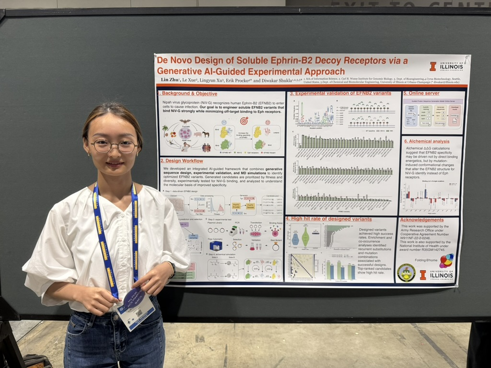

CVPR 2026 Workshop CV4CHL (2026).
About Me
I am Lin (Lynn) Zhu, a PhD researcher in Informatics at the University of Illinois Urbana-Champaign. I hold an MS in Complex Systems and Data Science and a BS in Statistics.
My research centers on AI and machine learning, particularly deep learning, generative modeling, and agentic AI. I am interested in developing methods for learning, prediction, and generation across domains, with experience in protein modeling and biomedical applications.
Artificial IntelligenceMachine LearningDeep LearningGenerative ModelsAgentic AI
Work Experience
Research Assistant — Game Studio Application Form
iSchool · University of Illinois Urbana-Champaign
- Designed the front-end interface and application form for the Game Studio application workflow.
- Collaborated with the back-end team to align form fields, data requirements, and front-end/back-end integration.
Front-end DesignApplication FormsCross-team Collaboration
Education
PhD in Informatics
2028 (anticipated)University of Illinois Urbana-Champaign · GPA 3.87
MS in Complex Systems and Data Science
2023Shenzhen University · GPA 3.25
BS in Statistics
2020Hainan Normal University · GPA 3.7
Technical Strengths
PythonRC++MATLABHTML/CSSPyTorchscikit-learnOpenMMMySQL
Selected Publications
Bioinformatics (listed in CV; year and publication status not specified).
PI-Mamba: Linear-Time Protein Backbone Generation via Spectrally Initialized Flow Matching.
The Protein Journal (2024).
Prediction of Solubility of Proteins in Escherichia coli Based on Functional and Structural Features Using Machine Learning Methods.
Work in Progress
Two first-author manuscripts in preparation (anticipated completion: end of 2026).
Poster Presentations
De Novo Design of Soluble Ephrin-B2 Decoy Receptors via a Generative AI-Guided Experimental Approach
Presented work combining generative AI with experimental validation for soluble Ephrin-B2 decoy receptor design.

Selected Honors & Awards
First-grade Scholarship for Master’s Degree
2020–2022National Inspirational Scholarship
2017–2019Second Prize, 10th National Collegiate Mathematics Competition
2018
Teaching & Service
Graduate Assistant
IS 203 — Analytical Foundations for Information Problems
Teaching Assistant
- IS 202 — Social Aspects of Information Technology
- IS 467 — Ethics & Policy for Data Science
Community Service
External Officer, Sunshine Youth Volunteers Association, Hainan Normal University (2016–2017).